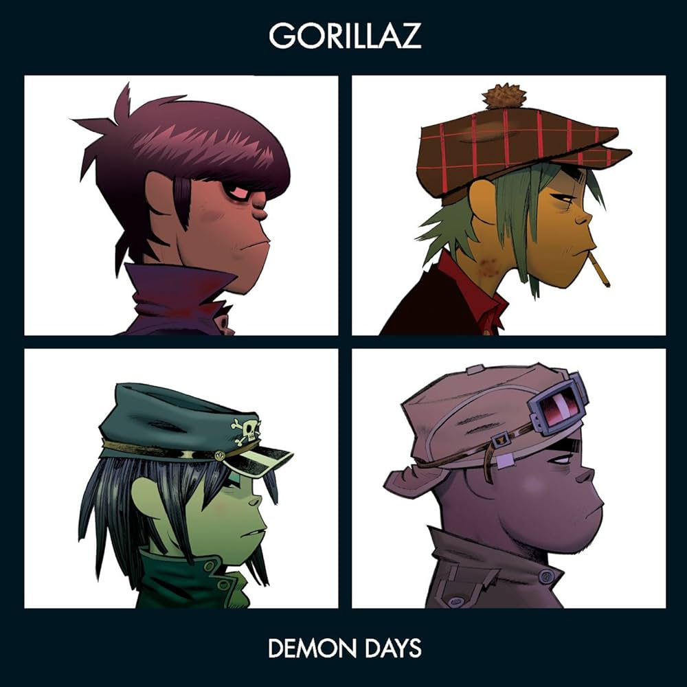
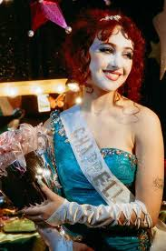

|
|
Género: Hip-hop, R&B, Rap experimental, Trap
Formación: Tampa, Florida, EE. UU. (1996)
Nombre real: Jariyah "Doechii" Johnson
Doechii se ha establecido como una de las artistas más prometedoras de la escena musical contemporánea, destacándose por su estilo versátil que fusiona hip-hop, R&B, rap experimental y trap. Con una habilidad única para mezclar géneros y sonidos, Doechii crea una experiencia auditiva única, caracterizada por sus rítmicas complejas, letras creativas y una presencia vocal inconfundible. Su música abarca desde lo introspectivo hasta lo festivo, utilizando su rap como una herramienta para explorar temas de identidad, poder personal y relaciones.
Lo que diferencia a Doechii de otros artistas dentro del panorama musical actual es su capacidad para explorar y redefinir los límites de los géneros que toca. En un mundo musical cada vez más homogéneo, Doechii ha logrado destacarse por su capacidad de experimentación, creando sonidos que se sienten frescos y únicos. Su estilo no solo atraviesa diferentes géneros musicales, sino que también es capaz de mezclar letras profundas con una actitud audaz y confiada, lo que la convierte en una voz de relevancia en la escena del rap y el R&B.
Con su lírica afilada y su presencia escénica poderosa, Doechii ha creado un espacio propio dentro de la música contemporánea, donde las barreras entre el hip-hop y otros géneros se desdibujan, generando una mezcla vibrante de emociones y estilos que ha cautivado a audiencias internacionales.
Reconocimiento en Billboard y Complex como uno de los artistas emergentes más innovadores del año.
Aclamación de críticos por su capacidad de redefinir el rap femenino y por su habilidad para mezclar géneros con una facilidad impresionante.
Colaboraciones con artistas de renombre como SZA, creando una conexión con el público más allá de las fronteras del rap.
Versatilidad sonora: Doechii no se limita a un solo estilo; su música fluye a través de géneros como hip-hop, R&B y trap, con una fluidez que es rara en la industria actual. Su capacidad para experimentar con sonidos frescos la ha colocado como una de las artistas más prometedoras del rap experimental.
Lírica audaz y creativa: Doechii se destaca por su habilidad para mezclar humor, sarcasmo, introspección y poder femenino en sus letras, abordando temas como la autodefinición, el amor propio y la independencia de manera directa y empoderada.
Estética única y mensaje de empoderamiento: Más allá de su música, Doechii ha creado una estética visual y una marca personal que desafía las expectativas de la industria, representando una versión del hip-hop en la que la originalidad, la autenticidad y el poder personal son la norma.
|  |
 |
|
 |
 |
 |